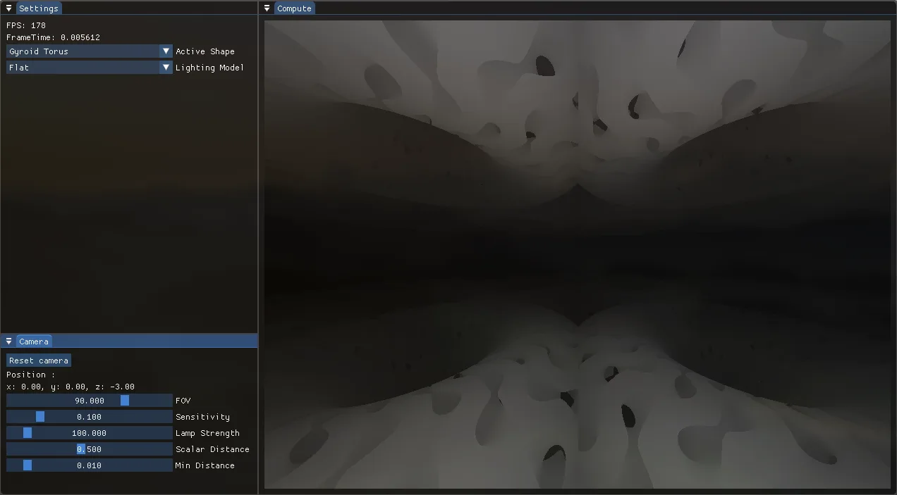
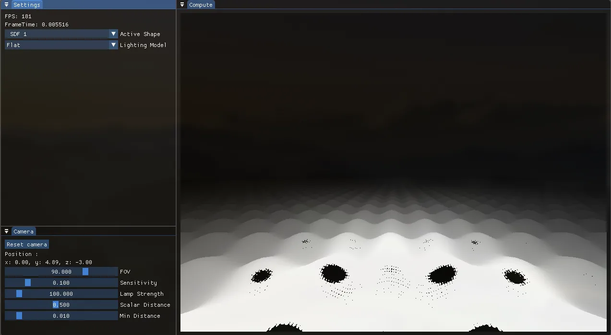
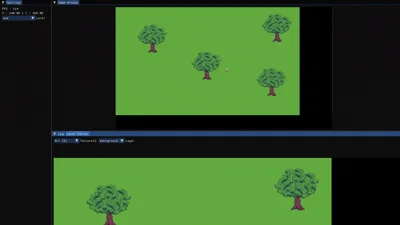
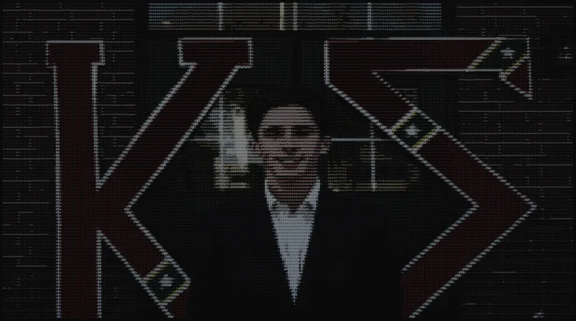

GRAPHICS / SYSTEMS / RESEARCH
Hunter Liles.
Computer Science & Computational MathematicsMcNeese State University
Computer graphics is my niche, but I’m driven by learning new
systems and solving difficult problems wherever they lead.
01 / Selected work
MATHEMATICS → WORKING SOFTWARE
RENDERING RESEARCH
In progress
Signed Distance Field Research
Exploring the benefits and limitations of rendering geometry
defined by distance functions.
As an undergraduate researcher, I develop a custom SDF
rendering engine with C++, Vulkan, and GLSL with another
undergraduate researcher at McNeese.
The screenshots show different fractals or infinitely
repeating geometry created through trigonometric functions.
C++ / GLSL / Raylib / SDFs
Explore the shared research repository
↗

Gyroid torus · flat lighting.
View another render

Repeating-surface experiment. Visible artifacts are part of
the result.
GRAPHICS SOFTWARE
In progress
Blossom
A small, data-oriented Vulkan sandbox for experimenting with
rendering and development tools.

Earlier Blossom build. The linked branch now uses Vulkan.
The Vulkan branch uses GLFW, Dear ImGui, and HLSL shaders.
Shader reload keeps the current pipelines active if a
replacement is invalid, preserving a working render while
iterating.
C++ / Vulkan / HLSL / Dear ImGui
Inspect the Vulkan branch ↗
SYSTEMS / COMPUTATION
Details pending
Algorithmic Trading System
A project exploring algorithmic trading through software.
PROJECT NOTES TO COME
The problem, implementation, and engineering decisions will be
documented here.
Contribution details, working features, and results are being
confirmed.
Trading repository ↗
Repository access may be privated.
02 / Research & experience
Current
Undergraduate Student Researcher
McNeese State University · Engineering & Computer Science
Research in graphics and interactive systems with another
undergraduate reseracher under the stewardship of Dr.
Lavergne.
Current
McNeese Tutor
McNeese State University · Math & Science
Helping fellow students understand math and physics concepts.
Current
Church IT
Iowa First Baptist Church
Hardware maintenance and technical troubleshooting for the
church’s media/worship team.
03 / Education & technical
skills
McNeese State University
Computer Science &
Dual degree / major
Languages
C++, C, Rust, GLSL, HLSL, SQL, Java, Python
Graphics
OpenGL, Vulkan, SDF rendering, physics simulation
Tools
Git / GitHub, Linux, LaTeX, SQL Servers
04 / Beyond the projects
A little about me

Hover or focus to meet the man behind the pixels.
When I am not at my computer learning about all things
programming and graphics, you will find me out on the golf
course or running around my hometown. From a young age I was out
on the golf course getting that little white ball in the hole.
Likewise, from a youngage I also ran religously. While in high
school I pursued those two sports heavily and was able to get to
state in running and regionals (missed state by one spot my
senior year) in golf.
From coordinates to pixels
ROTATION → PERSPECTIVE
Pause animation
A simple 3D renderer inside JS. All handwritten.
{kind=link}
{kind=link}